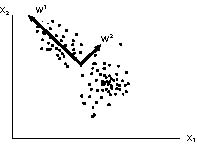

Let us have a close look of the Hebb learning rule:
wi <- wi + e y(x) xi
we shall consider only linear network where y(x) = Si wi xi = x wT, x and w are row vectors. In matrix notation, we can compactly write
w <- w + e (w xT) x (for one neutron, N inputs, one scalar output)
However, this updating rule for w is not stable. For example, if it happens x>0 and y>0, then repeated application of the above formula will make w go to infinity. A way to get around this is to limit the norm of the vector w, by requiring that the length of the vector is fixed at |w| = 1, where |w|2 = Siwi2. Then the updating consists of two steps, (1) w <- w + e (w xT) x, (2) w <- w/|w|. Assuming the learning rate is small (say 10-3), we can combined the two steps into one. The following modified Hebbian rule is known as Oja's rule
w <- w + e y ( x - y w), where y = x wT. (3)
the additional term proportional to - y2 w causes the w to decay, thus it will not diverge to infinity. In fact, it will converge to |w| = 1.
[Work out the steps from equations (1) & (2) to (3), correct to leading order in e.]
What would be the results if we apply (3) repeatedly? Of course, that will depends on the training sample x. To quantify the set of possibly training sample, we assume x is drawn from a fixed probability distribution P(x). We assume that x is identically, and independently distributed (iid).
In the limit of many training samples with small e, we expect that w fluctuates about a mean <w> which we'll still write as w. the correction term that is proportional to e is zero on average, so we require that
< y (x - y w) > = < xTx > w - (wT <xTx> w) w (4)
where x is row vector and xT is column vector, w is assumed to be a constant with respect to the average denoted by < ... >. Let us define C = < xTx>. It is known as correlation matrix. In component form, Cij = <xi xj>. We can write Eq.(4) as
C w - (wT C w) w = 0.
If Cw = l w, then C w = l |w|2 w = l w, then we have shown |w| = 1. The equation
C w = l w
is called an eigenvalue problem, and l is called eigenvalue and w is eigenvector. In the limit of large training samples drawn from the distribution P(x), the weight approaches one of the eigenvector of the correlation matrix. It can be shown that w in fact approaches the eigenvector with largest eigenvalue. Other directions (eigenvectors) are unstable against small perturbation.
Equation (3) pick out the largest eigenvector corresponding the largest eigenvalue. A simple generalization can be used to pick out the first M eigenvectors with M linear neurons. This is known as Sanger's learning rule:
wk <- wk + e yk ( x - Sj=1k yk wk)
Note that for k = 1, it is the same as Eq.(3). For k = 2, we have
w2 <- w2 + e y2 ( x - y1 w1 - y2 w2)
When convergence is reached, all w vectors are orthogonal to each other and normalized to 1. wk is then an eigenvector of C with eigenvalue lk. The eigenvalues are in decreasing order with index k.
The set of values yk = wk xT are called principal components of x. The set of directions w are the principal directions in the sample space x for the variance y. The variance y forms a high dimensional "ellipsoid": (assume <y>=0)
<y2> = w C wT
the direction w1 corresponds to the direction of largest variation with variance l1. w2 gives the second largest variance in a direction that is perpendicular to w2, w3 is third largest variation direction that is perpendicular to w1 and w2, and so on. Here is in this plot a schematic illustration of the concept.

What is good use of the above learning algorithm? Such network can be used as a pre-processing layer in a multi-layer network for data reduction. This will make the whole network faster (in learning). In such applications, the number N of input signals will be much larger than output signals M. the mapping y = W x can be viewed as a form of data compression.
One particular interesting application is image data compression. Since the set of w's form a new orthogonal axis, we can expand any arbitrary input data x along these axis,
x = b1 w1 + b2 w2 + b3 w3 + ...
multiplying (scale product with) wk to both side of the equation, we find
bk = wk xT = yk
In order to go back to x from b's without loss of information, we need N components of b. However, if we keep only the first M components, then they represent a compressed information. We test this idea with the example of Mathematica code.